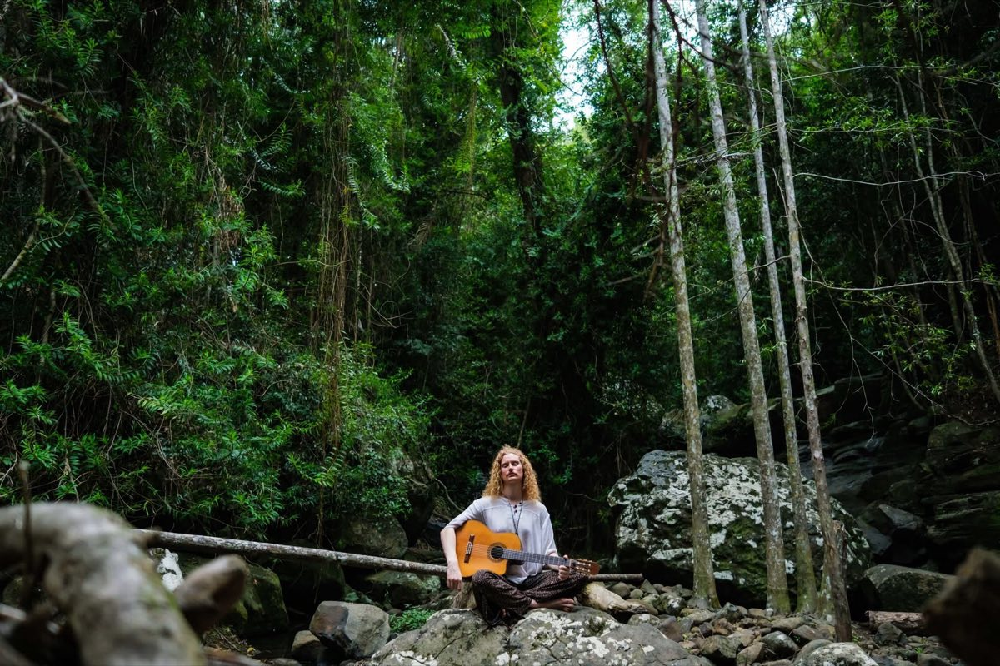

Sound that evokes what is most sacred
Gongs, singing bowls, six strings and a room of people breathing together. Two ways in: sit with me one to one, or join Sacred Playground — free, and open to anyone.
Inspired by the music? Support the artist on Patreon →
Begin wherever feels easiest
Ninety minutes, just you and the sound
Vibrational Empathy Sound Healing. A short conversation, then gongs and bowls while you lie still and let it work.
Book a timeSacred Playground
A heart-led space for medicine music, meaningful connection, creativity, healing & the art of being.
Join Sacred PlaygroundAnd if the music stays with you, support it on Patreon →
Two branches, three roots
Two branches hold the work people meet me through. Three roots hold the ground it grows from. Each has its own page.
- 01 Sound HealerBranch Gongs, Himalayan and crystal bowls. One to one, groups up to thirty, or woven through a whole retreat. View →
- 02 MusicianBranch Nylon-string and electro-acoustic guitar, loop pedal and voice. Listening rooms, festival stages, ceremonies. View →
- 03 BusinessRoot Wellbeing programmes, retreat design and operations, and team days for organisations. View →
- 04 PractitionerRoot Daily practice, training, a clear ethical frame — and mentoring for practitioners. View →
- 05 FacilitatorRoot Circles, team offsites and festival spaces. Sound opens the space; the conversation stays. View →

Alexander Alma — a World-Bridger.
Alexander orchestrates sonic tapestries that evoke a deeper connection to what is most sacred.
As a musician, sound healer, mentor and facilitator, he is dedicated to creating spaces for deeper connection, self-expression and transformation.
His artistry is an invitation into presence and connection — a living exploration of what becomes possible when we allow ourselves to feel, express and play.
Come closer.
A session, the Sacred Playground, or a song — start wherever feels easiest.
Inspired by the music? Support the artist on Patreon →